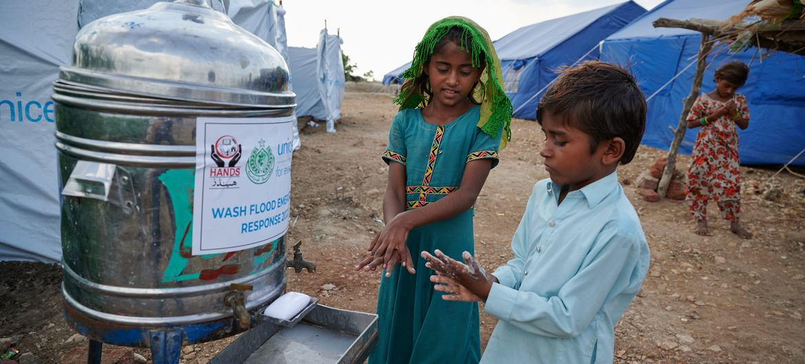

8-4
El gobierno escolar es un método de preparación para lo que será la democracia políticamente cuando seamos mayores de edad y votar legalmente, en la democracia o gobierno escolar se nos enseña a ser personas de bien y a usar la democracia para elegir bien y ser justos. Gracias a que en los colegios se enseña esto, ayuda a tener autonomía y tener un derecho de votar y elegir al candidato que al pueblo (estudiantes) parezca bien y que nos represente respetando nuestros derechos y deberes como alumnos. La gobernación política como el gobierno escolar cualquiera tiene voz y voto y cualquier persona puede ser un gobernante si lo eligen. Dependiente de lo que sea en términos de personalidad; Si tiene un buen liderazgo buenas propuestas y está dispuesto a ejercer ese cargo al que se está postulando con sus ideas, es nuestro deber nosotros como pueblo elegir al candidato que mejor nos represente que tenga caracter de lider y sea alguien que vele por nosotros y de verdad sepa ejercer su cargo. Un defecto de la democracia escolar es que los alumnos no siempre tienen un criterio participativo y no se animan a ser escuchados a plantear sus ideas por pena o miedo a que sus ideas sean rechazadas o simplemente a los alumnos no se les dice en realidad que pueden llegar a ser en la democracia sólo participan dos veces en un año cuando se debería implementar aún más para fomentar a estos estudiantes y que no solo sea un deber el votar y algo sin sentido sino que realmente lo disfruten el votar y lo hagan a conciencia y no se tomen todo como un juego, ya que de ellos en un futuro dependerá colombia lo que ellos elijan a todo un país lo afecta o lo hace mejor

NOTICIAS DEL CAF Y LA DEFENSORIA DEL PUEBLO COLOMBIANO
CAF y la Defensoría del Pueblo trabajarán en conjunto para fortalecer la capacidad tecnológica en favor de los derechos humanos en Colombia
Con el propósito de promover los derechos humanos en Colombia, CAF -banco de desarrollo de América Latina- y la Defensoría del Pueblo firmaron un Memorando de Entendimiento, que permitirá unir la experiencia de ambas instituciones para alcanzar este objetivo. El objetivo principal de este Memorando es establecer un marco de colaboración entre la Defensoría del Pueblo de Colombia y CAF para trabajar en conjunto en el desarrollo de acciones de cooperación, a través de programas y proyectos que impulsen la efectividad de los derechos humanos de niños, niñas, adolescentes, jóvenes, mujeres, población étnica, población con discapacidad y personas mayores habitantes del territorio nacional. Para lograrlo se trabajará en tres frentes principales: 1) La modernización del software de atención y trámite de quejas, con el que se va a mejorar y a asegurar la correcta captura de información que proviene de diferentes fuentes, incluyendo las quejas y peticiones que presente cualquier persona ante la entidad. 2) El uso y la apropiación de los procesos tecnológicos por parte de los servidores de la Defensoría del Pueblo para que utilicen las herramientas digitales disponibles y las provechen con miras a obtener mejores resultados en el desarrollo de sus labores. 3) Desarrollar acciones dirigidas a la gestión del conocimiento para impulsar la efectividad de los derechos humanos. La firma de este Memorando fue liderada por el presidente ejecutivo de CAF, Sergio Díaz-Granados; y el Defensor del Pueblo de Colombia, Carlos Carmargo Assis. El Presidente Ejecutivo de CAF aseguró: “Este Memorando está alineado con los ODS en temas estratégicos como promover sociedades más inclusivas y reforzar alianzas que mejoren la calidad de vida de los ciudadanos; y especialmente con nuestra misión de promover el desarrollo social, en esta oportunidad mediante la afectividad de los derechos humanos con la transición digital que permitirá ofrecer mejores servicios de atención, ciberseguridad y brindar mejores prácticas para el resto de la región como por ejemplo en alertas tempranas; por lo que estamos muy contentos de esta alianza con la Defensoría del Pueblo de Colombia”. Por su parte, el Defensor del Pueblo, Carlos Camargo Assis, destacó: “Este convenio nos permitirá focalizar el desarrollo de las capacidades tecnológicas con las que ya contamos, fortalecer la labor del talento humano y ampliar nuestra cobertura de atención y servicio al ciudadano. Queremos optimizar la respuesta institucional a la hora de promover y proteger los derechos humanos”. De la misma forma, el Defensor del Pueblo aseguró que “la firma de este convenio con CAF nos permite afianzar nuestra común voluntad, estrechar lazos de confianza y colaboración, para lograr el fortalecimiento de los derechos humanos por medio de una eficiente gestión de proyectos, cuyo foco principal son las poblaciones más vulnerables y el medio ambiente”. De la misma forma, el Defensor del Pueblo aseguró que “la firma de este convenio con CAF nos permite afianzar nuestra común voluntad, estrechar lazos de confianza y colaboración, para lograr el fortalecimiento de los derechos humanos por medio de una eficiente gestión de proyectos, cuyo foco principal son las poblaciones más vulnerables y el medio ambiente”. Entre las líneas temáticas del convenio se destacan: 1) Capacitación para el fortalecimiento de los derechos humanos a través de herramientas en gestión de proyectos y política pública.
2) Intercambio de experiencias exitosas de las Defensorías a nivel regional en metodologías y estrategias de información sobre el seguimiento a los conflictos sociales, el acompañamiento que se les haga, el sistema de alertas tempranas de conflictividad y la sistematización de la información.
3) Apoyo a la estrategia digital sobre cursos en gerencia, liderazgo y gestión de proyectos.
4) Creación de programas formativos para los servidores de la Defensoría del Pueblo.
5) Desarrollo de la sistematización de estrategias y acciones conjuntas.
DERECHOS DE AUTOR:CAF.COM
NOTICIA: VUNERACION EN DERECHOS A PERSONAS DE LA COMUNIDAD LGBT EN COLOMBIA
La organización Caribe Afirmativo presentó su informe anual sobre la situación de los derechos humanos de las personas LGBTIQ+ a nivel nacional. El documento destaca que hubo registro y conocimiento de 5.501 casos de violaciones de derechos humanos relacionados con homicidios, feminicidios, violencia policial, amenazas, actos de discriminación y hostigamiento hacia esta población
Según la organización, entre el primero de enero y el 31 de diciembre de 2022, fueron asesinadas 145 personas LGBTIQ+. Esta cifra indica que, aproximadamente, cada dos días y medio, la violencia acabó con la vida de una persona con una orientación sexual o identidad de género diversa. Si bien se presentó una reducción del 29% frente a los 205 casos reportados en 2021, “siguen siendo alarmantes los altos índices de afectaciones a la vida e integridad personal de personas LGBTIQ+”, afirma el reporte De las 145 víctimas de homicidios y feminicidios, 47 fueron hombres gais (32%), 14 corresponden a mujeres lesbianas (9,6%), diez a hombres bisexuales (6,8%), cuatro a mujeres bisexuales (2,75%), 49 a personas con experiencias de vida trans (17,24% equivalente a 25 hombres trans y 24 mujeres trans, 16,55%), 15 a personas con otras identidades (11%) y seis a casos en las categorías “sin especificar” (4,13%). El defensor del Pueblo, Carlos Camargo, lamentó estas cifras y explicó por qué se presenta esta situación: “La existencia de prejuicios y patrones culturales de género, siguen siendo los principales argumentos que legitiman la discriminación y la violencia en razón a la orientación sexual, identidad y expresión de género, llevando a graves violaciones a los derechos humanos de esta población”.
El funcionario también hizo un llamado a generar acciones para eliminar los prejuicios de la acción institucional hacia esta población durante la Conmemoración Internacional del Orgullo LGBTI. Allí presentó el informe que contiene un “análisis sobre los casos de violencia por prejuicio orientados por la entidad durante 2021, alertando también sobre los casos de homicidios y feminicidios ocurridos en los primeros meses de 2022″. “La situación de derechos de las personas LGBTI en Colombia es preocupante por el aumento de homicidios, feminicidios y amenazas que se justifican y fundamentan en la orientación sexual, expresión o identidad de género de las víctimas y que además perjudican a quienes ejercen liderazgos sociables en sus territorios”, concluyó la ONG Caribe Afirmativo en su informe dado a conocer a la Agencia EFE.A nivel territorial, los departamentos de Antioquia y Valle del Cauca son los que más registraron casos de homicidios y feminicidios para el 2022. Se presentaron 24 víctimas en Antioquia y 25 en el Valle del Cauca. Caribe Afirmativo también reporta que se registraron 110 casos de tentativas de homicidios y feminicidios en el territorio nacional. No obstante, para la organización “resulta muy preocupante que, de departamentos como Amazonas y Guainía, no se obtenga información alguna, y de otros como Vichada y Vaupés solo se tenga conocimiento de tres casos de violencias en cada territorio”. Durante el 2022, la Fiscalía expidió una guía para investigar y judicializar violencias contra personas LGBTIQ+. Esta estrategia permite aplicar un enfoque diferencial y dentro de las modificaciones se incluyeron casillas para registrar la orientación sexual e identidad de género de las personas y sus nombres identitarios. Este avance hace que por primera vez se tenga un registro de los hechos motivados por prejuicio.
.jpg) DERECHOS DE AUTOR: EL ESPECTADOR.COM
DERECHOS DE AUTOR: EL ESPECTADOR.COM
NOTICIA: LOS DERECHOS DE LOS NIÑOS CADA VEZ MENOS VALORADOS EN EL MUNDO
Los derechos de los niños deben seguir siendo una prioridad y sus voces deben escucharse y tomarse en cuenta, comentó el lunes en Ginebra el Alto comisionado de las Naciones Unidas para los Derechos Humanos al inaugurar la 92ª sesión del comité de los Derechos del Niño de la ONU. Volker Türk recordó que este año se celebra el 75 aniversario de la Declaración Universal de los Derechos Humanos, el documento que ha marcado el camino hacia los derechos, la dignidad y la igualdad para todas las personas. “Al embarcarnos en la celebración de la Declaración, la cual durará todo el año, esforcémonos por garantizar que los derechos de los niños sigan siendo nuestra prioridad colectiva”, afirmó.Disminución del respeto El respeto de los derechos de los niños en todo el mundo está en fuerte retroceso, informa el Alto comisionado.
Los niños se llevaron la peor parte de los esfuerzos para responder a la pandemia del COVID-19, lo que afectó especialmente a sus derechos a la educación. La realidad del cambio climático amenaza sus vidas el día de hoy y su futuro, dijo Türk. Mientras tanto, los defensores de los derechos de la infancia, especialmente las niñas y niños no conformes con su género, se han enfrentado a una creciente represión en muchos países. Privados de lo mínimo Muchos niños y niñas alrededor del mundo continúan viviendo en zonas de guerra o con graves necesidades humanitarias y en todas las crisis, los niños se encuentran entre los más afectados. “Los datos reflejan una realidad escalofriante. Los niños representan el 41% de los más de 100 millones de desplazados forzosos que hay en el mundo”, añadió. “En 15 países afectados por la crisis, unos 40 millones de niños sufren una grave inseguridad nutricional, al no recibir lo mínimo que necesitan para crecer y desarrollarse en la temprana infancia”. Apoyo a los tratados de la ONU El Alto Comisionado dijo que su Oficina estaba ultimando un plan que facilitaría la labor del Comité de los Derechos del Niño y de los demás comités surgidos de los diferente tratados de derechos humanos la ONU. Estos 10 comités, compuestos por expertos de todo el mundo, supervisan la aplicación de los principales tratados internacionales de derechos humanos que abordan cuestiones como poner fin a la discriminación contra la mujer y prevenir la tortura y otros tratos crueles, inhumanos o degradantes. "La labor de mi Oficina y la de los cuerpos de vigilancia de los tratados se refuerzan mutuamente, y seguiremos basándonos en sus debates, deliberaciones y resultados sustantivos", afirmó. "Nuestra jurisprudencia, observaciones generales y observaciones finales sobre situaciones específicas de países constituyen una orientación esencial para el trabajo de mi Oficina y del sistema de la ONU sobre derechos humanos en general". Necesidad de financiación Türk dijo que también era consciente de la crónica falta de financiación para estos órganos surgidos de los tratados, lo que ha contribuido a un retraso significativo en los informes de los Estados y en las comunicaciones individuales. Avanzar en la plena aplicación de las obligaciones de derechos humanos basadas en tratados requiere una financiación sostenible por parte de los Estados miembros, dijo Türk, que reconoció que también requiere recursos presupuestarios suficientes por parte de su Oficina. Además, el impulso que rodea a la conmemoración del aniversario de la Declaración Universal de los Derechos Humanos también presenta nuevas oportunidades. Por ejemplo, "brinda la oportunidad de reforzar la cooperación y el compromiso entre los mecanismos internacionales y regionales de derechos humanos”, aseguró. “El Comité tiene un enorme potencial para comprometerse con los 196 Estados Partes en la Convención sobre los Derechos del Niño a través del diálogo sobre cuestiones relacionadas con la infancia como punto de partida", afirmó. Informe adaptado a los niños Türk adelantó que en marzo se celebrará una reunión del Consejo de Derechos Humanos de la ONU en la que, por primera vez, niños de distintas regiones se unirán a él en una mesa redonda sobre los retos y oportunidades a los que se enfrentan a la hora de ejercer sus derechos en el espacio digital. Garantizar los derechos de los niños El Alto Comisionado comenzó su intervención citando a una asesora infantil del Comité, la activista climática Maya-Nutuk de Groenlandia, quien afirmó que los niños son una prioridad, no una elección. "Creo que las palabras de Maya, y las voces de otros niños como ella, pueden guiar el debate de hoy. "Guiarnos para seguir haciendo de los derechos de los niños una prioridad. Impúlsanos a garantizar que sus voces no sólo se oigan, sino que se escuchen. E instarnos a responder y a actuar. Para garantizar que todos los niños, en todas partes, disfrutan de sus derechos y fundamentales libertades". 